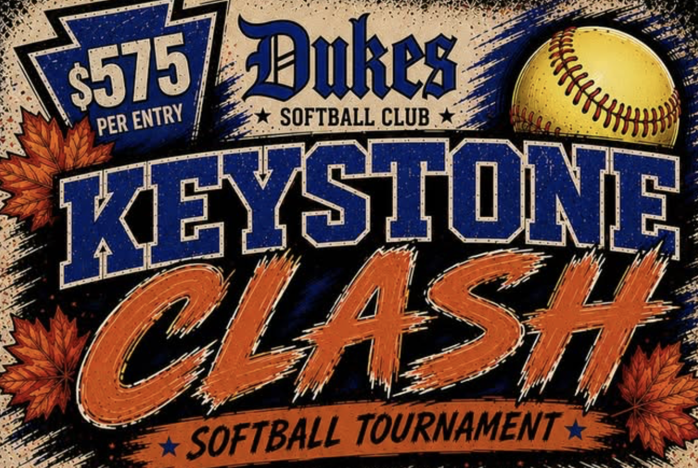

KEYSTONE CLASH 2026
TOURNAMENT RULES
Hosted by Lady Dukes Softball Club • September 11–13, 2026
East End Park • 51 Meadow St, McDonald, PA 15057
11U & 12U B/C • Limited to 8 teams • 4 games guaranteed
Thank you for participating in the Keystone Clash. The purpose of this tournament is for all players to have fun and enjoy the game of softball. Your participation, and the time you devote to helping the players grow as young adults, make it all possible.
ROSTERS AND ELIGIBILITY
There is no formal check-in for this tournament. Instead:
Each team must provide proof of insurance and proof of sanctioning by a nationally recognized sanctioning body to the tournament directors at ladydukeslafever@gmail.com prior to the first game.
Proof of age for all players must be available throughout the tournament and must be provided if challenged by the opposing coach. Any eligibility protest must be made before the game starts. If a challenge is made and the coach cannot provide proof of the player’s age, all games in which the questionable player participated will be forfeited. The team making the challenge must submit a $100 challenge fee.
No double rostering and/or roster additions are allowed throughout the tournament unless consented to by the tournament director.
Final decisions on all roster eligibility questions are made by the tournament director.
SCHEDULE AND GAME RESULTS
Official game times, field assignments, and results are posted on Tourney Machine (tourneymachine.com). Live standings, stat leaders, and GameChanger links are on the tournament page at thedr21.github.io/KeystoneClash. Please check them regularly — as with any tournament, last-minute changes may occur.
Pool play is Friday evening and Saturday morning/midday. Bracket play begins Saturday afternoon immediately after pool play is complete, with bracket times posted as pools finish. Semifinals and the championship are Sunday. Plan to remain at the complex Saturday — do not leave between pool play and bracket play.
After every game, the coach or scorekeeper should text both teams’ final score to 724-518-0879. Tournament staff will record and post scores.
It is the coach’s responsibility to verify your team’s posted scores and record. Any dispute of game results must be made within 2 hours of posting. The tournament director’s discretion is final.
FORMAT
All teams will play 2 pool games. After completing pool play, all teams will be seeded into a double-elimination bracket based on pool play results. The championship is a single game — there is no “if necessary” game. The final format may change depending on weather delays or other scheduling conflicts.
POOL PLAY TIEBREAKERS
Applied in order until the tie is broken:
Pool play won–loss record.
Head-to-head result between the tied teams.
Fewest runs allowed in pool play.
Run differential (runs scored minus runs allowed).
Most runs scored in pool play.
Coin flip.
MISCELLANEOUS RULES
Any rescheduled or replacement games, and any crossover pool games, will count as regular games. The tournament director’s discretion is final on all makeup games.
Games are guaranteed to each team except for circumstances beyond the tournament director’s control (e.g. rainouts, teams canceling, umpire mis-schedules, etc.).
A game is official once 3 complete innings have been played (2½ innings if the home team is ahead), unless ended earlier by the run rule. If play is stopped mid-inning by weather or other cause, the score reverts to the last completed inning. Games stopped before becoming official are recorded as a rainout.
It is the responsibility of each coach to understand their final rankings in pool play and where and when they will play their bracket game. Pool play rankings are not complete until the standings are marked “FINAL.” DO NOT LEAVE THE PARK AFTER YOUR LAST POOL PLAY GAME UNTIL A REPRESENTATIVE FROM YOUR TEAM HAS VERIFIED YOUR TEAM’S RECORD.
GAME LENGTH
All games are 6 innings.
The time limit on all pool play and bracket play games is 90 minutes. This will help keep the tournament on time for the other teams, fans, and spectators, even if this results in a shorter game. The umpire’s time is the official time. The only exception is weather delays: the tournament director may shorten time limits as needed to get the tournament back on schedule.
No inning shall start after 90 minutes; however, the current inning will be completed (unless the home team is ahead and at bat). An inning shall start upon the last out of the previous inning.
In pool play, tie games are allowed and shall be recorded as such.
In bracket play, games cannot end in a tie. If the game is tied after 6 innings, or when the time limit expires, the international tiebreaker will be used until a winner is determined.
If the umpires are ready to start before the scheduled start time, the coaches are to have their teams prepared to play up to 30 minutes prior to scheduled start time.
Championship games have no time limit and will be played a full 6 innings. If tied after 6 innings, the international tiebreaker will be used until a winner is determined.
USA SOFTBALL RULES APPLY with the following tournament exceptions IN POOL AND BRACKET PLAY:
Because the intent of this tournament is to give the players more playing time, the coach has the option of batting up to his/her entire lineup. This is strictly a coaching option and must be declared at the plate meeting. This means you can bat up to everyone on the roster, and any 9 on the team can play defense. The official batting order (lineup card) is handed to the umpire at the start of the game and must include first and last name, defensive position, and uniform number of each player. Those not listed in the batting order need to be listed as substitutes with first and last name and uniform number. Normal batting order substitution rules apply. To help play as many girls as possible, if the coach has chosen to bat more than 9, an out is not declared if 1 player is injured and then her batting position comes up. Once an injured player is removed on offense, she may not re-enter.
A courtesy runner may be used for the current pitcher or catcher at any time. Any player can be used. If the player is still on base when her batting position comes up, the runner will be declared an out and the player will assume their at-bat.
There is free defensive substitution in the field for teams batting their entire lineup. Any team that is not will follow USA Softball substitution rules.
HOME TEAM — In both pool play and bracket play, home team will be determined by Softball Roll. The coaches will choose a player or team representative to stand in the batter’s box closest to their dugout. The verbal instructions of “1, 2, 3, Roll” will be given by the umpire. Both participants will roll a softball toward the pitcher’s plate while both feet are still in the batter’s box. Note: it does not matter if the ball goes beyond the pitcher’s plate. The closest ball to the pitcher’s plate is the winner and that coach has the option to choose home or away. Each coach should bring their participant to the plate meeting. Dugout assignments are on a first-come basis, and if a team played the previous game on the same field they keep the same dugout.
FORFEITS — A team not on the field ready to play within 15 minutes of game time will forfeit the game unless granted an extension by the tournament director for good cause. Forfeited games benefit neither team, and the tournament director’s decision is final on all matters regarding a forfeit. Only the tournament director or the UIC may declare a forfeit. Forfeited games will count as 1-0 games.
RUN RULE — The game ends when a team is ahead by 12 runs after 3 innings, 10 runs after 4 innings, or 8 runs after 5 innings (2½, 3½, or 4½ innings if the home team is ahead).
AWARDS — Championship rings will be awarded to the champion and runner-up.
GAME BALLS — US Softball certified 12″ .47 cor / 375 lb leather softballs or equivalent will be provided for each game.
UMPIRES — Every game, pool and bracket, is worked by a two-umpire crew.
FIRST AID — For all injuries, please contact local EMT services.
PROTESTS — All field decisions by umpires are final. There are no protests. We feel we have a knowledgeable crew of umpires, and this is necessary to keep the tournament on time for the other participants. You must work out any conflicts with the umpires at the time of the disagreement. However, the umpire’s decision is final.
TOURNAMENT DECISIONS — All tournament decisions (rain delays, scheduling, etc.) are made for the smoothest operation of the tournament for the majority of the teams involved — not just your team — and are made by the tournament directors. Their decision is final.
ADMISSION AND PARKING — There is no admission charge for this tournament. Parking is limited: there are two small lots on site (the main lot off Meadow St at the complex entrance, and a very limited lot next to Field 2 off Chestnut St) and both fill quickly. Overflow parking is on East O’Hara St, a short walk to the fields. Please arrive early, do not block driveways or park on lawns, keep the outfield access lanes clear for emergency vehicles, and be respectful of the residential neighborhood. A parking map is on the tournament page. PLEASE LET YOUR PARENTS AND FANS KNOW THIS SO NO ONE IS SURPRISED.
UNIFORMS — All players must be in uniform. However, because call-up players are allowed, the uniforms do not have to be matching.
WEATHER DELAYS — Games may be adjusted and/or shortened to complete the tournament or get back on schedule. Games interrupted might not be rescheduled. For current weather information affecting the tournament, check Tourney Machine and the tournament page at thedr21.github.io/KeystoneClash.
WEATHER CANCELLATION POLICY — If no games can be played, a partial refund will be provided to each team. Full refunds are not possible due to the expenses of the tournament which must be paid prior to the first game played.
2 or more games played — no refunds
1 game played — 60% refund
0 games played — 90% refund
For refund purposes only, a game that has started and for which the umpires have received payment will count as a game played.
ENTRY FEE AND WITHDRAWAL REFUND POLICY — The entry fee is $575 per team. Paid-in-full teams pick their schedule first. If a team withdraws before the tournament is sold out (or 8/11), whichever comes first), a full refund will be issued less the 10% non-refundable deposit. If a team drops out after 8/11 or the tournament has sold out earlier and we have turned away teams, no refund will be issued.
CONCESSIONS AND AMENITIES — Concessions are operated by the Fort Cherry Fastpitch Association — please support them. Porta johns and hand sanitizing stations are available throughout the weekend. A 50/50 raffle runs all weekend with the drawing on Sunday; proceeds support the Lady Dukes Softball Club, a 501(c)(3) nonprofit.
FACILITY RULES
No warm-ups on the infield before the game.
No smoking in dugouts, on the field, or in the stands.
Hitting softballs into fences is not allowed.
Hard softball pitching machines are prohibited.
Pets: allowed on leash
No artificial noisemakers are allowed during the game.
If there are no home run fences, deep outfield warm-ups are allowed.
SPORTSMANSHIP — Please remember that these softball games are being played to help the players grow into confident young adults. They are not life-and-death situations. Unsportsmanlike conduct will not be tolerated and will be dealt with on an individual basis — including the barring of any team/individual from this or any future Lady Dukes Softball Club tournament. Managers/coaches are held responsible for the players’ and fans’ conduct also, so please take control of any possible situation.
CONTACT — Tournament directors: Derek Rocco, Artie Tortorice, Steve LaFever. Text: 724-518-0879. Email: ladydukeslafever@gmail.com.
Please have all your parents, players, and fans use common sense: keep valuables out of sight in their cars and lock their cars when they are not there. Also please do your part to keep the facility clean by having the players and fans clean up after themselves.
Remember, the purpose of this tournament is for the players to have fun, play competitive softball, and make new friends. That goes for the fans and coaches also.
Best of Luck!
LADY DUKES TOURNAMENT STAFF